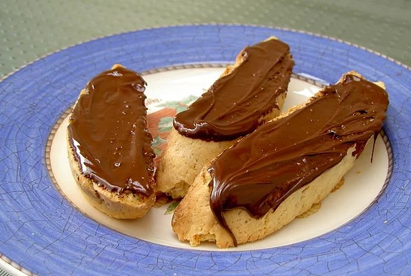

Biscotti Toscani

Description
These twice baked cookies have a delicate flavor, great with vanilla
ice-cream, tea, frozen yogurt, or cappuccino.
This is an extremely popular dish in Italy and is loved all over the world.
Ingredients:
- ⅓ cup butter
- ¾ cup white sugar
- 2 eggs
- 1 teaspoon vanilla extract
- ¼ teaspoon almond extract
- 2 teaspoons orange zest
- 2 ¼ cups all-purpose flour
- 1 ½ teaspoons baking powder
- ⅛ teaspoon ground nutmeg
- ¼ teaspoon salt
- 1 cup semisweet chocolate chips
- ½ cup toasted almond pieces
Procedure
- Preheat the oven to 325 degrees F (165 degrees C). Grease and flour a large
baking sheet.
- In a large bowl, cream butter and sugar until light and fluffy. Beat in eggs,
vanilla, almond extract, and zest. Combine flour, baking powder, nutmeg, and
salt. Stir into the creamed mixture until just blended. Mix in almonds.
Divide dough into two pieces. Form into long flat loaves about 1/2 inch tall
and 12 inches long. Place the loaves 2 inches apart on the
prepared baking sheet.
- Bake in preheated oven for 25 minutes, or until a light golden brown. Cool
on a wire rack for 5 minutes.
- With a serrated knife, cut diagonally into slices about 1/2 inch thick.
Lay the slices flat on the baking sheet. Bake for 10 minutes, turning over
once. Transfer to a wire rack to cool.
- Place chocolate chips into a small, microwave-safe bowl. Melt chocolate
in the microwave, stirring every 20 to 30 seconds until smooth. Use a spatula
to spread chocolate onto one side of each cookie. Let stand at room temperature
until set. Store biscotti at room temperature in an airtight container.
Back to list of recipes